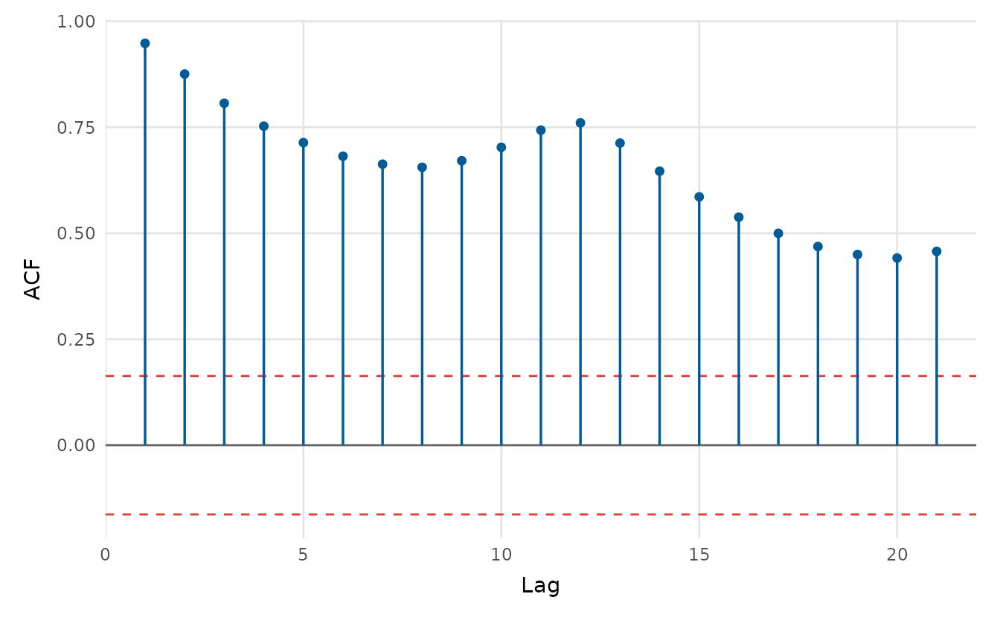

depictr provides a small, consistent set of time-series plots. The
examples use AirPassengers, a classic monthly series that
ships with base R.
Plotting a series
timeseries_plot() accepts a ts object, a
numeric vector, or a data frame with time, value and (optionally) group
columns. A moving-average overlay is one argument away.
timeseries_plot(AirPassengers, rolling = 12,
title = "Air passengers", y_lab = "Passengers (thousands)")
Autocorrelation
acf_plot() draws the autocorrelation (or, with
type = "partial", the partial autocorrelation) function,
with approximate significance bounds.
acf_plot(AirPassengers)
acf_plot(AirPassengers, type = "partial")
Decomposition
decompose_plot() separates a seasonal series into trend,
seasonal and remainder components. Use method = "stl" (the
default, loess-based) or method = "classical".
decompose_plot(AirPassengers, title = "Air passengers, decomposed")